1장 데이터 플라이휠이 필요한 이유 · 2장 차량·클라우드·검증 환경을 잇는 전체 구조와 일반 AI 플라이휠과의 차이 · 3장 실도로 데이터가 모델 개선으로 이어지는 단계별 기술(가상 실패 사례 1건으로 추적) · 4장 기업별 전략과 2025~2026 동향 · 5장 병목·사업 경쟁력·진화 방향
근거 표기
모든 사실 항목 뒤에 등급을 붙임. 🔍 1차 출처 원문을 직접 읽음(GitHub 저장소 README·릴리스 노트 등) · ✅ 두 개 이상 출처로 교차 확인 · 📰 보도·검색 요약만 확인(원문 미열람) · ⚠️ 미확인·추정. 기업이 스스로 밝힌 수치는 "공개 주장"으로 표기
조사 제약
세션 네트워크 정책상 tesla.com·waymo.com·wayve.ai·mobileye.com·nvidia.com·arxiv.org·법령 사이트 원문 접근 불가. GitHub 원문과 웹 검색 요약을 사용했으므로 📰 등급이 많음. 전체 출처는 reference/references.md, 그림 출처는 reference/images.md
성능의 결정 요인이 코드에서 데이터로 이동함. Tesla는 FSD v12에서 도심 주행 스택을 "30만 줄 이상의 C++ 코드를 대체하는 단일 신경망"으로 바꿨다고 릴리스 노트에 명시함 📰. 규칙은 사람이 고치지만 모델은 데이터로만 고칠 수 있으므로, 데이터를 모아 고쳐 배포하는 루프가 곧 개발 방법이 됨.
사고율은 드문 상황(롱테일)이 좌우함. Waymo의 WOD-E2E 데이터셋은 일상 주행에서 발생 빈도 0.03% 미만 상황만 모은 것임 📰. 도시·날씨·나라가 바뀌면 성능이 떨어지고(분포 변화), 재학습한 모델은 예전에 잘하던 것을 잊음(성능 회귀).
실도로 주행만으로는 안전을 증명할 수 없음. RAND는 사람보다 안전함을 95% 신뢰로 보이려면 무사고 2억 7,500만 마일이 필요하다고 계산함 📰. 따라서 시뮬레이션과 "계속 도는 폐쇄루프"가 필수임.
차량 플라이휠은 일반 AI 플라이휠과 여섯 가지가 다름. ① 데이터가 차 안에서 태어나 업로드 예산에 묶임 ② 정답이 개입·사고 같은 물리적 결과임 ③ 배포 앞에 안전 인증 관문이 있음 ④ 업데이트가 규제(UN R156)에 묶임 ⑤ 시뮬레이터가 필수임 ⑥ 개인정보·데이터 국외 반출 규제를 받음.
2021년 "데이터 엔진"과 2026년 플라이휠은 같은 원, 다른 부품임. 사람이 짠 트리거 → 임베딩 검색, 사람 라벨링 → 파운데이션 모델 자동 라벨링, 로그 재생 → 3D 재구성·생성형 월드모델, 모방학습 → 폐루프 강화학습, 연 단위 릴리스 → 주 단위 OTA로 이동 중임.
핵심 수치
구분
수치
근거
규칙 → 모델
Tesla FSD v12: C++ 30만 줄 이상을 단일 종단간 신경망으로 대체(2024-03)
📰
롱테일
Waymo WOD-E2E: 발생 빈도 0.03% 미만 상황 4,021개 구간(약 12시간)
📰
사고 빈도
미국 사람 운전자 부상 신고 충돌 100만 마일당 2.80건
📰
분포 변화
Waymo Open Dataset: 도심→교외 차량 APH −8.0, 교외→도심 보행자 APH −19.8; Wayve 영국→미국 적응에 100시간·8주 500시간
📰
안전 증명
RAND: 무사고 2억 7,500만 마일(95% 신뢰), "20% 더 안전" 입증에 110억 마일
📰
실적
Waymo 무인 2억 2,060만 마일(2026-03), 중상 이상 충돌 92% 감소(1억 7,070만 마일 분석), IIHS 부상 충돌 81% 감소
📰
시뮬 규모
Waymo 실주행 2,000만 vs 시뮬 200억 마일 이상, Carcraft 하루 800만~1,000만 마일
📰
온보드 선별
Tesla 트리거 221개·약 10초 클립·첫 데이터셋 100만 클립·1.5PB·루프 7회(2021)
📰⚠️
자동 라벨링
Tesla 1만 주행: 수작업 500만 시간 → 클러스터 12시간(2022, GPU 4,000장)
📰⚠️
큐레이션
Cosmos Curator: 2,000만 시간 영상을 Blackwell 14일(Hopper 40일, CPU 3년 이상)
📰
재구성
InstantNuRec: 10~20초 다중 카메라 장면을 약 1.5초에 3DGS로 재구성
🔍
배포
Tesla 대형 버전 약 10개월(v13→v14), 포인트 릴리스 1~2주, 초기 롤아웃 0.1% 미만
📰⚠️
일반 AI 플라이휠
NVIDIA 블루프린트: 추론 비용 최대 98.6% 절감(단순 도구 호출 용도 한정, README 단서)
원뜻: 플라이휠(flywheel)은 무거운 바퀴를 뜻함. 처음 돌리기는 힘들지만 한번 돌면 관성으로 계속 돎.
사업 용례: Amazon의 제프 베조스가 2001년에 그린 선순환 그림이 유명함. 가격을 낮추면 고객이 늘고, 고객이 늘면 판매자와 상품이 늘고, 그러면 고객 경험이 좋아져 다시 고객이 늚 📰 (retaildogma, feedvisor).
AI 용례(데이터 플라이휠): 위 그림의 주어를 데이터로 바꾼 것임. NVIDIA 용어집 정의는 "상호작용과 프로세스에서 모은 데이터로 AI 모델을 계속 개선하고, 그 모델이 더 좋은 결과와 더 가치 있는 데이터를 낳는 피드백 루프" 📰 (NVIDIA Glossary).
핵심 ①: 모델을 쓰면서 나온 데이터를 버리지 않고 다시 학습에 씀.
핵심 ②: 그 과정이 한 번이 아니라 계속 반복됨.
자율주행 용례: 같은 말을 "데이터 엔진(data engine)" 또는 "폐쇄루프(closed loop)"라고도 부름.
2024년 학술 서베이의 정의: "(1) 데이터 수집 → (2) 저장 → (3) 선별·전처리 → (4) 라벨링 → (5) 모델 학습 → (6) 시뮬레이션·테스트 검증 → (7) 실세계 배포"의 반복 🔍 (Awesome Data-Centric AD README, 논문 arXiv 2401.12888).
같은 서베이가 산업 사례로 드는 회사: Tesla·NVIDIA·Momenta·Horizon·Baidu·XPeng·Pony.ai·Amazon 등 아홉 개 🔍.
종단간의 뜻: 카메라 영상이 들어가면 조향·제동·가속이 바로 나옴. 중간에 사람이 짠 규칙이 없음.
전환의 의미: 규칙은 사람이 고치지만, 모델은 데이터로 고침. 모델이 어떤 상황에서 틀렸다면 그 상황의 데이터를 더 모아 다시 학습시키는 것 외에 방법이 없음. 따라서 데이터를 모으고 고치고 다시 배포하는 루프가 곧 개발 방법이 됨.
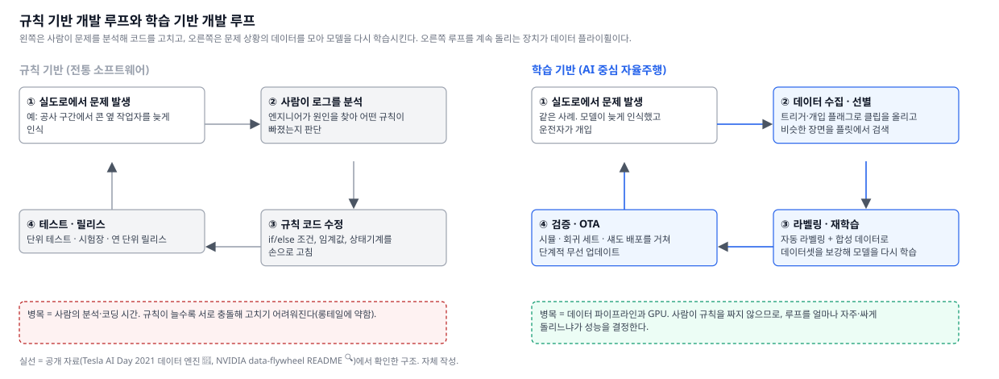
그림 1. 규칙 기반 개발(왼쪽)은 사람이 문제를 분석해 코드를 고친다. 학습 기반 개발(오른쪽)은 문제 상황의 데이터를 모아 모델을 다시 학습시킨다. 오른쪽 루프를 계속 돌리는 장치가 데이터 플라이휠이다. 자체 작성.
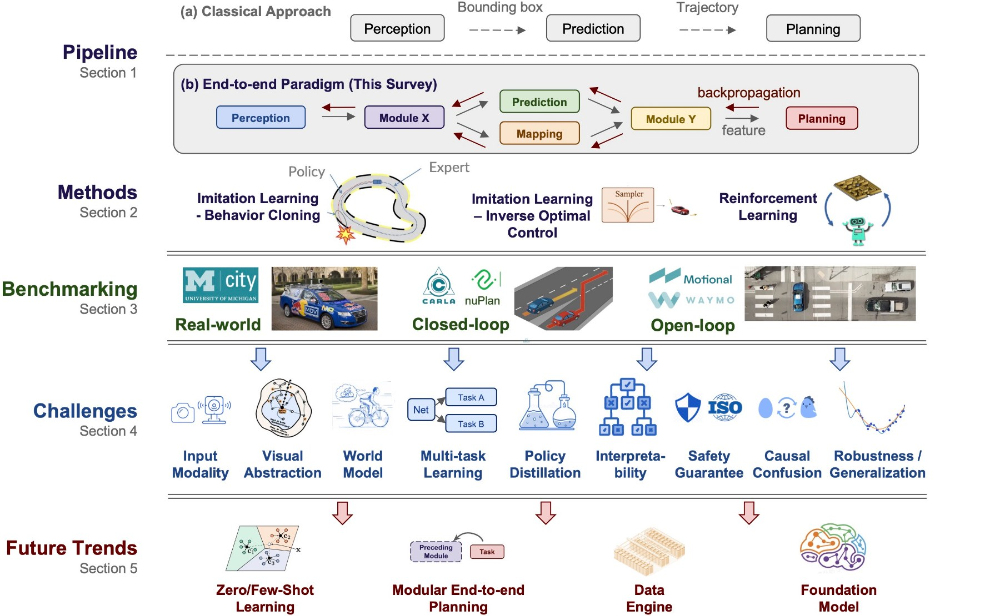
그림 2. 학계 서베이가 정리한 고전 파이프라인(a: 인지 → 예측 → 계획을 사람이 정한 인터페이스로 잇는다)과 종단간 패러다임(b: 모듈 사이를 학습으로 잇고 역전파로 함께 고친다). 맨 아래 "미래 과제"에 데이터 엔진(Data Engine)이 들어 있다. 출처: Chen et al., 「End-to-end Autonomous Driving: Challenges and Frontiers」(TPAMI 2024) 공식 저장소 OpenDriveLab/End-to-end-Autonomous-Drivingassets/overview.jpg, MIT. 크기만 줄임.
정의: 주행의 대부분(직진, 차선 유지, 앞차 따라가기)은 평범하고 모델은 금방 배움. 문제는 드물게 일어나는 상황임(공사 구간 콘 옆 작업자, 갑자기 뛰어드는 동물, 비 오는 밤의 역광, 예측하기 어려운 사람의 행동). 이를 롱테일(long tail) 이라 부름. 빈도 그래프의 오른쪽으로 길게 늘어진 꼬리처럼, 각각은 드물지만 종류가 무한히 많음.
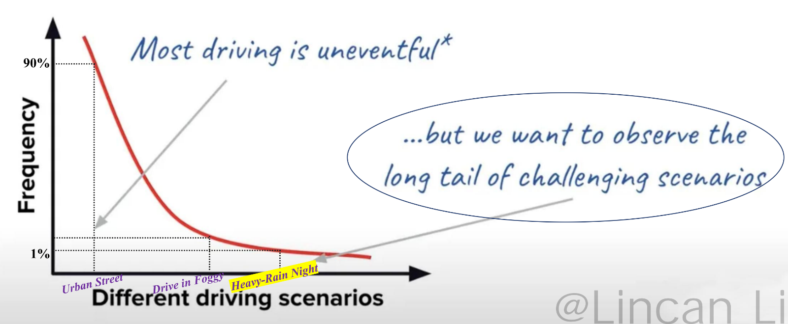
그림 3. 주행 시나리오의 빈도 분포. 도심 직진 같은 상황이 90%를 차지하고, 안개·폭우 야간 같은 상황은 1% 아래의 긴 꼬리에 있다. 출처: Li et al., 「Data-Centric Evolution in Autonomous Driving」(arXiv 2401.12888) 공식 저장소 Li et al. 2024 서베이 저장소img_resource/1-1_Long_Tail_Distribution.png, Apache-2.0. 크기만 줄임.
현상: 모델을 다시 학습시키면 새로 넣은 상황은 좋아지지만 예전에 잘하던 상황이 나빠질 수 있음. 학습 분야에서는 파국적 망각(catastrophic forgetting) 이라 부름. 새 데이터에 맞춰 가중치를 바꾸다가 예전 지식이 덮어써지는 현상임.
연구 근거: 자율주행의 지속 학습에서도 보호 장치 없이 재학습만 하면 망각이 생김 📰 (IEEE).
대응 = 회귀 테스트: 플라이휠에는 회귀 테스트가 반드시 들어감.
Tesla의 Andrej Karpathy가 CVPR 2021 발표에서 설명한 데이터 엔진 루프: "섀도 모드로 배포 → 예측을 관찰 → 트리거를 조정해 새 데이터 수집 → 잘못된 예측을 '유닛 테스트'로 만들기 → 비슷한 예제를 데이터셋에 추가 → 재학습 → 반복". 당시 플릿에서 221개 트리거 가동 📰 (발표 요약).
틀렸던 상황을 테스트로 남겨 두면 다음 모델이 그 상황을 다시 틀리는지 확인 가능함.
Waymo: 새 소프트웨어를 낼 때마다 "테스트 트랙·실도로·합성 시나리오 전부를 시뮬레이션에서 다시 실행"하고, 충돌 회피 시나리오는 상대 차량의 위치·속도를 조금씩 바꿔 가며(fuzzing) 돌림 📰 (Waymo CAT).
통계적 한계(RAND, 2016, "Driving to Safety"): 2013년 미국 교통사고 사망률(1억 마일당 1.09명) 기준 📰 (RAND RR-1478).
입증하려는 명제
필요한 주행 거리
조건
자율주행차가 사람보다 사망률이 낮다
무사고 2억 7,500만 마일
95% 신뢰 수준
사람보다 20% 더 안전하다
110억 마일
95% 신뢰·80% 검정력
보고서 결론: "주행만으로는 안전에 도달할 수 없다(cannot drive their way to safety)".
실제 수치와의 비교
Waymo: 2026년 3월 기준 무인(rider-only) 누적 2억 2,060만 마일. 1억 7,070만 마일 분석에서 사람 대비 중상 이상 충돌 92% 감소, 에어백 전개 83% 감소, 보행자 부상 92% 감소 📰 (Waymo Safety Impact).
독립 기관 IIHS 분석: 부상 충돌 81% 감소로 조금 낮음 📰.
해석: 10년 가까이 세계에서 가장 많이 달린 회사가 이제 RAND의 첫 번째 문턱을 넘었을 뿐임.
Tesla: FSD 누적 100억 마일을 공개했으나 충돌 집계 방식이 정부 데이터와 달라 독립 검증이 없다는 비판을 받음 📰⚠️ (tesla.com/fsd/safety, 비판).
안전 표준의 결론: ISO 21448(SOTIF, 의도된 기능의 안전)은 주행 상황을 "알려짐/모름 × 안전/불안전"의 네 영역으로 나누고, "모르는 불안전 상황(unknown unsafe)"을 합리적 노력으로 최대한 줄이는 반복 과정을 요구함. 주요 수단은 시뮬레이션을 포함한 광범위한 검증임 📰 (Ansys SOTIF 해설).
시뮬레이션 규모(Waymo)
실주행 2,000만 마일에 시뮬레이션 200억 마일 이상을 얹음. 자체 시뮬레이터 Carcraft는 하루 800만~1,000만 마일 📰 (Simulation City, CACM 2018).
2026년 2월: Google DeepMind의 Genie 3 기반 "Waymo World Model"로 플릿이 본 적 없는 상황(토네이도, 도로 위 코끼리)까지 만들어 시험 📰 (Waymo 블로그).
결론: 네 가지를 한 번에 해결하는 방법은 하나임. 차에서 데이터를 모으고, 고쳐서, 시뮬레이션으로 확인하고, 다시 차에 보내는 루프를 계속 돌리는 것임. "데이터 플라이휠"이든 "데이터 엔진"이든 구조는 같음. 그 구조를 2장에서 펼침.
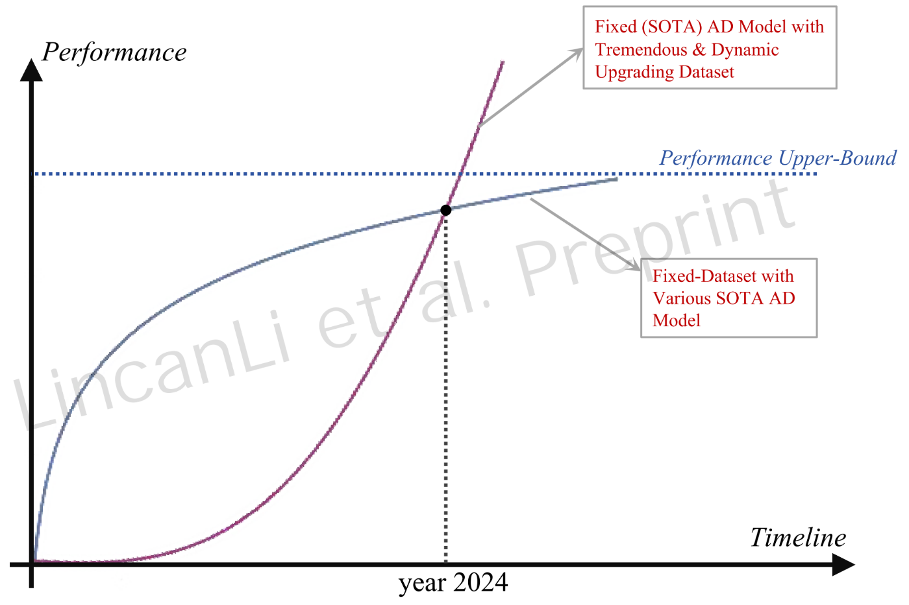
그림 4. 같은 서베이의 개념도. 데이터셋을 고정하고 모델만 바꾸면(파랑) 성능이 상한에 막히고, 데이터셋을 계속 키우면(보라) 그 상한을 넘는다는 저자들의 주장이다. 실측 곡선이 아니라 개념도다. 출처: Li et al. 2024 서베이 저장소img_resource/1-2_Illustration-of-AD-Model-Performance-Upper-Bound.png, Apache-2.0. 크기만 줄임.
정의(NVIDIA 블루프린트 README): "데이터 플라이휠은 생산 애플리케이션의 데이터 배기가스(예: LLM 프롬프트·응답 로그, 사용자 피드백, 전문가 라벨)를 사용해 생성형 AI 시스템의 정확도를 높이고 지연·비용을 줄이는 프로세스" 🔍 (data-flywheel README).
7단계🔍
단계
내용
1
로그 저장소(Elasticsearch)에서 생산 데이터를 가져옴
2
작업(task)별로 묶음
3
중복 제거
4
계층화 분할로 평가용·미세조정용 데이터셋 생성(최소 50건)
5
데이터 저장소(NeMo Datastore)에 업로드
6
미세조정 서비스(NeMo Customizer)로 작은 모델 학습
7
평가 서비스(NeMo Evaluator)가 "LLM-as-judge"(큰 모델이 채점자 역할)로 원래 모델과 비교하고, 좋으면 승격
효과 = 비용 절감(단서 포함)
README: "NVIDIA 내부 실험에서 플라이휠로 추론 비용을 최대 98.6% 줄인 사례가 있다" 🔍.
같은 문장의 단서: "이런 사례는 에이전트가 소수의 도구 중 하나를 고르는 단순한 도구 호출 용도에 집중돼 있다" 🔍.
사례 내용: 인사 챗봇에서 미세조정한 1B 모델이 70B 모델 정확도의 약 98%를 냄.
사내 지식 비서 논문(직원 3만 명 이상 사용): 3개월간 부정 피드백 495건을 모아 라우팅 오류 5.25%를 찾아내고, 라우터를 70B 모델에서 미세조정한 8B 모델로 바꿔 정확도 96%·지연 70% 감소 📰 (arXiv 2510.27051).
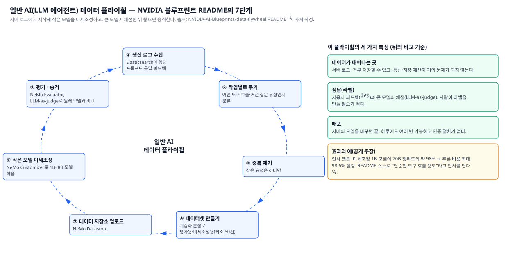
그림 5. 일반 AI(LLM 에이전트) 데이터 플라이휠. NVIDIA 블루프린트 README의 7단계를 원으로 그렸다. 데이터는 서버 로그에서 나오고, 정답은 사용자 피드백과 큰 모델의 채점이며, 배포는 소프트웨어 교체다. 자체 작성.
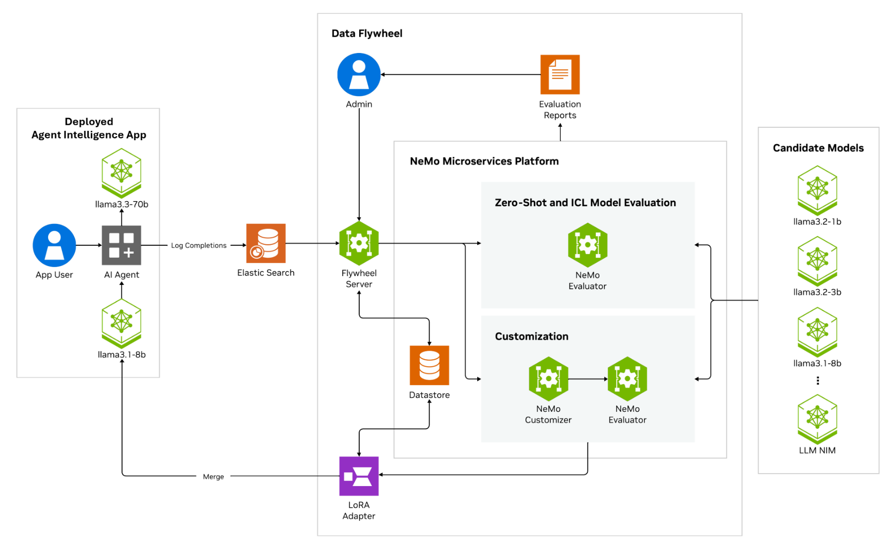
그림 6. NVIDIA가 공개한 데이터 플라이휠 블루프린트의 공식 구조도. 배포된 에이전트 앱이 로그를 Elasticsearch에 쌓고, 플라이휠 서버가 이를 데이터셋으로 만들어 NeMo Customizer로 후보 소형 모델(1B~8B)을 미세조정하고 NeMo Evaluator로 채점한다. 통과한 LoRA 어댑터가 앱으로 되돌아간다(Merge). 출처: NVIDIA-AI-Blueprints/data-flywheeldocs/images/data-flywheel-blueprint.png, Apache-2.0. 크기만 줄임.
NVIDIA·AWS의 "AV 3.0 데이터 파이프라인"(2026-03) 📰 (AWS 블로그, 요약만 확인).
학술 서베이의 7단계 폐쇄루프 🔍.
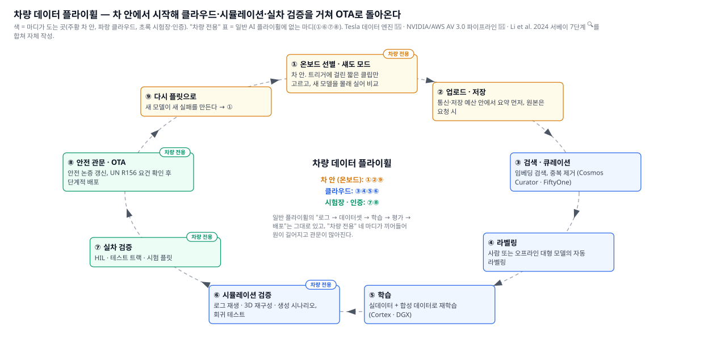
그림 7. 차량 데이터 플라이휠. 차 안(온보드)에서 시작해 클라우드·시뮬레이션·실차 검증을 거쳐 OTA로 돌아온다. 일반 플라이휠에 없는 마디를 색으로 표시했다. 자체 작성.
9개 마디
마디
어디서
무엇을 하나
대표 사례
① 온보드 선별
차 안
모든 데이터를 올릴 수 없으므로 "트리거"(조건)에 걸린 짧은 클립만 고름. 새 모델을 몰래 실어 기존 모델·운전자와 비교하는 섀도 모드도 여기서 돎
Tesla 트리거 221개, 약 10초 클립 📰; openpilot은 카메라·CAN·GPS·IMU를 기본 업로드 🔍
② 업로드·저장
차 → 클라우드
통신비·저장비 예산 안에서 올림
Mobileye REM은 km당 약 10KB만 전송 📰; comma는 월 수백 TB 처리 📰
③ 검색·큐레이션
클라우드
수백만 클립에서 원하는 상황을 찾고 중복을 없앰
NVIDIA Cosmos Curator·Dataset Search 📰
④ 라벨링
클라우드
정답을 붙임. 사람 또는 오프라인 대형 모델
Tesla 자동 라벨링(주 1만 클립) 📰
⑤ 학습
클라우드
실데이터 + 합성 데이터로 재학습
Tesla Cortex, NVIDIA DGX 📰
⑥ 시뮬레이션 검증
클라우드
로그 재생·3D 재구성·생성 시나리오로 폐루프 시험, 회귀 테스트
Waymo 하루 800만~1,000만 시뮬 마일 📰
⑦ 실차 검증
시험장·시험 플릿
HIL(하드웨어 인 더 루프)·테스트 트랙·시험 차량
Waymo 테스트 트랙 + 실도로 📰
⑧ 안전 관문·OTA
인증 → 차
안전 논증 갱신, 규제(UN R156) 요건 확인 후 단계적 배포
Tesla v14.x 주 단위 OTA 📰
⑨ 다시 ①
차 안
새 모델이 새 실패를 만듦
—
일반 플라이휠과의 대응: 7단계 중 "로그 수집·데이터셋·학습·평가·배포"는 그대로 있음. 차량에서 새로 생긴 것은 ①(차 안 선별), ⑥(시뮬레이션 필수), ⑦(실차), ⑧(안전 관문·규제)임.
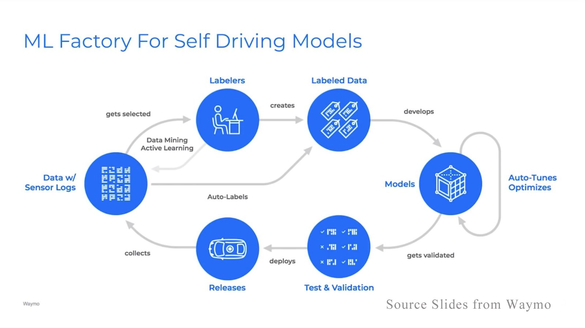
그림 8. Waymo가 발표한 "ML Factory for Self Driving Models" 슬라이드. 센서 로그 → 데이터 마이닝·능동학습으로 선별 → 라벨러 또는 자동 라벨 → 모델(자동 튜닝) → 테스트·검증 → 릴리스 → 다시 수집. 위 표의 ③④⑤⑥⑧ 마디가 그대로 보인다. 출처: Waymo 발표 슬라이드 화면, Li et al. 2024 서베이 저장소에 수록(img_resource/3-2-2_Waymo_close_loop.png, 저장소 Apache-2.0). 원 저작권은 Waymo에 있다. 크기만 줄임.
흐름: 사람이 쓴 트리거가 차에서 돎 → 걸리면 약 10초 클립 업로드 → 오프라인 자동 라벨링 → 재학습 → 섀도 모드로 배포.
당시 수치: 누적 100만 클립, 60억 개 객체 라벨, 1.5PB, 주당 1만 클립 자동 라벨링.
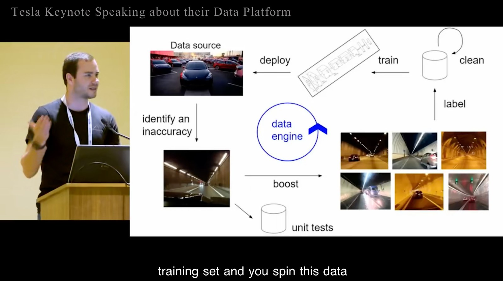
그림 10. Tesla가 발표한 데이터 엔진 슬라이드. 배포된 플릿(data source)에서 틀린 사례를 찾고(identify an inaccuracy) → 단위 테스트 세트에 넣고 → 비슷한 사례를 플릿에서 모아(boost) → 라벨·정제 → 학습 → 배포를 반복한다("you spin this data engine"). 2장·3장에서 말하는 회귀 세트와 유사 장면 회수가 이미 이 초기 발표에 들어 있다(발표 연도는 수록 저장소에 기재 없음 ⚠️). 출처: Tesla 발표 화면(서베이 저장소는 "Tesla AutoPilot Data Platform" 강연으로 표기), Li et al. 2024 서베이 저장소에 수록(img_resource/3-2-1_Tesla_close_loop.png, 저장소 Apache-2.0). 원 저작권은 Tesla에 있다. 크기만 줄임.
2026년 플라이휠: 원의 모양은 같지만 각 마디의 부품이 바뀜.
마디
기존 방식(2021년 전후)
최근 방식(2025~2026)
무엇이 달라졌나
데이터 발굴
사람이 조건을 코드로 쓴 트리거(Tesla 221개) 📰
임베딩 검색: 영상을 숫자 벡터로 바꿔 놓고 "비 오는 밤 공사 구간"처럼 글로 검색. NVIDIA Cosmos Dataset Search는 약 800만 영상으로 학습한 영상-텍스트 임베딩(Cosmos-Embed1)을 씀 📰; Voxel51 FiftyOne 📰
무엇을 찾을지 미리 코드로 정하지 않아도 됨
라벨링
사람 라벨링 회사(Scale AI, 인력 24만 명) 📰; Tesla는 2022년 자체 라벨팀 감원 📰
파운데이션 모델 자동 라벨링: NVIDIA Cosmos Curator가 "처리·주석·필터·중복 제거"를 맡고 🔍 (Cosmos README), Cosmos Reason 같은 시각언어모델이 "왜 이렇게 운전했나"까지 글로 붙임 📰
라벨 비용이 사람 수가 아니라 GPU 시간에 비례
장면 재현
로그 재생 + HIL(dSPACE 리플레이 시스템) 📰
3D 재구성: Waymo Block-NeRF는 사진 280만 장으로 샌프란시스코 한 구역(0.5km²)을 35개 신경 모델로 재구성 📰 (arXiv 2202.05263); NVIDIA NuRec은 3D 가우시안 스플래팅으로 주행 로그를 다시 걸어 다닐 수 있는 3D 장면으로 만듦 📰
그림 13. Cosmos Curator의 공식 파이프라인 그림. 분할·주석 파이프라인(다운로드 → 디코드 → 샷 경계 분할 → 트랜스코드 → 움직임·품질 필터 → VLM 캡션 → 영상 임베딩 → 저장), 의미 기반 중복 제거, 데이터셋 샤딩의 세 단계가 Ray 위에서 돈다. 출처: nvidia-cosmos/cosmos-curatedocs/assets/cosmos-curator-pipelines.png, Apache-2.0. 원본 크기.
원칙: 정답은 소급해서 붙임
온보드 모델은 현재 프레임까지만 보고 작은 모델로 빨리 답해야 함. 클라우드의 자동 라벨러는 그 제약이 없음.
자동 라벨러의 세 가지 이점: 미래 프레임을 볼 수 있음, 여러 차의 주행을 합칠 수 있음, 훨씬 큰 모델을 쓸 수 있음.
효과: 온보드 모델이 늦게 본 작업자를 "3초 뒤 프레임에서 확실히 보인 그 사람"으로 거슬러 올라가 첫 프레임부터 라벨링 가능. 콘 작업자 사례가 딱 이 경우임.
자동 라벨링 사례·도구
주체·도구
내용
근거
Tesla(AI Day 2022)
여러 주행을 합쳐 4D(3D + 시간)로 재구성한 뒤 차선·객체 라벨을 자동 생성. 1만 주행 기준 "수작업 500만 시간 → 클러스터 12시간" 주장(자동 라벨링용 GPU 4,000장)
그림 14. 라벨링 파이프라인의 세 유형. (a) 사람이 라벨링하고 사람이 검사, (b) 알고리즘이 라벨링하고 전문가가 개입, (c) 종단간 대형 모델·생성형 AI가 라벨링하고 자동 품질 검사. 완전 자동에서도 "통과/재작업" 루프는 남는다. 출처: Li et al. 2024 서베이 저장소img_resource/3-5-Mainstream-AD-Labeling-Pipelines.png, Apache-2.0. 크기만 줄임.
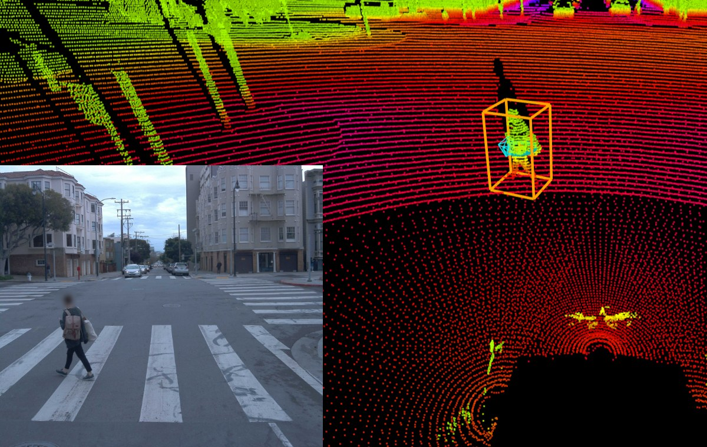
그림 15. 라이다 포인트클라우드 위에 붙은 보행자 3D 박스(주황)와 같은 순간의 카메라 영상(왼쪽 아래). 온보드 모델이 늦게 본 작업자도 클라우드의 자동 라벨러는 이런 3D 박스를 미래 프레임과 여러 주행을 합쳐 첫 프레임부터 만든다. 출처: waymo-research/waymo-open-datasetdocs/images/pedestrian-3D-labeling-example.png(저장소 Apache-2.0, 데이터 자체는 Waymo Open Dataset 이용약관). JPEG로 변환.
사람의 역할 = 검수로 이동
업계 관행: 자동 라벨 뒤에 사람이 배치당 10% 정도를 무작위 검수해 정확도 98% 이상을 확인 📰⚠️.
주의: 흔한 클래스가 99.8%여도 희귀 클래스는 85%인 "착시"가 있어, 사례처럼 희귀한 클래스는 전수 검수로 격상함.
외주 라벨 단가: 2D 박스 개당 $0.03~1.00, 세그멘테이션 마스크 $0.05~3.00 범위. Scale AI 같은 회사는 공개 단가표가 없음 📰⚠️ (업계 가이드).
사례 적용
클립을 임베딩해 플릿 전체에서 유사 장면을 검색하고, VLM으로 "roadwork, worker, night, rain" 태그를 붙여 걸러 냄.
첫 번째 방법: 수백 개 클립을 오버샘플링해 학습 비중을 높임. Tesla FSD v14.3 릴리스 노트는 "강화학습 단계를 업그레이드해 어려운 예에 집중"했다고 적음 📰⚠️ (릴리스 노트 인용).
한계: "작업자가 콘 뒤에서 나오는" 변형이나 "비가 더 세게 오는" 변형은 플릿에 없음. 따라서 합성 데이터가 필요하며, 방법은 세 갈래임.
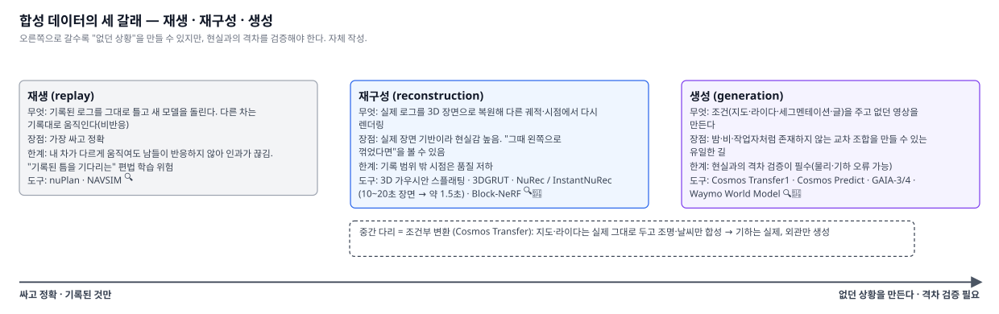
그림 16. 재생·재구성·생성. 오른쪽으로 갈수록 "없던 상황"을 만들 수 있지만 현실과의 격차를 검증해야 한다. 자체 작성.
갈래
무엇을 하나
장점·한계
대표 도구
재생(replay)
기록된 로그를 그대로 틀고 새 모델을 돌림. 다른 차들은 기록대로 움직임(비반응)
가장 싸고 정확하지만, 내 차가 다르게 움직여도 남들이 반응하지 않아 인과가 끊김. "기록된 틈을 기다리는" 편법을 배울 위험 📰 (분석)
nuPlan, NAVSIM 🔍
재구성(reconstruction)
실제 로그를 3D 장면으로 복원해 다른 궤적·시점에서 다시 렌더링
실제 장면 기반이라 현실감이 높고 "그때 왼쪽으로 꺾었다면"을 볼 수 있음. 기록 범위 밖 시점은 품질 저하
3D 가우시안 스플래팅(1080p 30fps 이상, 학습에 24GB VRAM) 🔍 (README); NVIDIA 3DGRUT(어안·롤링셔터·반사까지 처리, USD/NuRec 내보내기) 🔍; InstantNuRec은 10~20초 다중 카메라 장면을 약 1.5초에 재구성하고 Waymo Open Dataset에서 기존 최고 대비 +2.01dB 🔍 (README); Waymo Block-NeRF는 사진 280만 장으로 샌프란시스코 한 구역을 35개 신경 모델로 복원 📰
생성(generation)
조건(지도·라이다·세그멘테이션)을 주고 없던 영상을 만듦
밤·비·작업자 조합처럼 존재하지 않는 교차 조건을 만들 수 있는 유일한 길. 현실과의 격차 검증이 필수
NVIDIA Cosmos Transfer1은 세그멘테이션·깊이·엣지, 자율주행용 라이다·HD맵 조건으로 영상을 만들고, 영상 1개를 다시점으로 늘리며, 2025-08 증류 모델은 36스텝을 1스텝으로 줄임 🔍 (README); Wayve GAIA-3(150억 파라미터, 데이터 10배)는 안전 관련 희귀 장면을 만들어 평가하며 "합성 테스트 기각률 5배 감소"를 주장 📰⚠️; Waymo World Model 📰
중간 다리 = 조건부 변환(Cosmos Transfer 등): 지도와 라이다는 그대로 두고 외관만 밤·비로 바꾸므로, 장면의 기하는 실제이고 조명·날씨만 합성임.
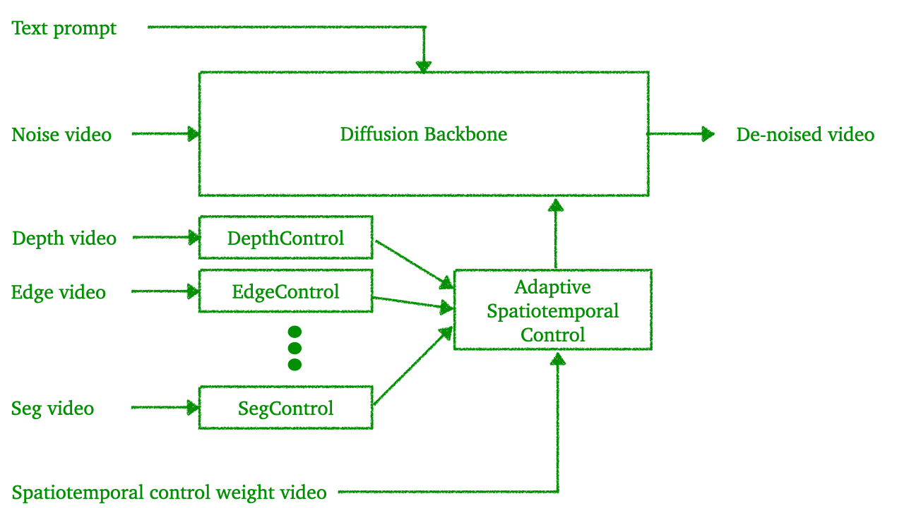
그림 17. Cosmos Transfer1의 공식 구조도. 깊이·엣지·세그멘테이션 영상이 각각의 제어 가지(DepthControl·EdgeControl·SegControl)로 들어가고, 시공간 가중치 영상으로 섞여 디퓨전 백본에 조건을 준다. 기하는 입력 조건이 정하고 외관은 생성된다. 출처: nvidia-cosmos/cosmos-transfer1assets/transfer1_diagram.png, Apache-2.0. 원본 크기.
폐루프 학습
문제: 기록을 흉내 내는 학습(모방학습)만 하면 모델은 자기 실수의 결과를 겪어 보지 못함.
해법: 시뮬레이터 안에서 정책이 직접 운전하고 그 결과로 배우는 폐루프 강화학습.
사례
내용
근거
NVIDIA AlpaGym
"시뮬레이터 안에서 정책을 폐루프로 돌리고, 주행을 채점하고, 그것으로 학습한다"는 오픈 프레임워크. AlpaSim(시뮬레이터) + Cosmos-RL(학습기) 조합. 현재 Alpamayo 1.5(10B) 정책을 GPU 2장 추론으로 지원하며 "초기 개발 단계"라고 밝힘
2022-11 0.9.0 "재투영 시뮬레이터로 학습" → 2025-08 0.10.0 "월드모델 기반 종단간 계획이 종방향 MPC 대체" → 2026-03 0.11.0 "학습된 시뮬레이터로 전량 학습한 새 주행 모델" 배포. 블로그: 이 월드모델은 2B 파라미터, 주행 영상 250만 분으로 학습. 합성 환경에서 학습한 정책을 실제 사용자에게 배포한 드문 공개 사례
그림 18. NVIDIA가 공개한 Alpamayo 강화학습 레시피의 구조도. 롤아웃 복제본(vLLM)이 주행을 생성해 보상과 함께 롤아웃 풀에 넣고, 정책 복제본이 이를 소비해 가중치를 갱신하며, 갱신된 가중치가 롤아웃 쪽으로 되돌아간다. 출처: NVlabs/alpamayo-recipesrecipes/alpamayo1_x_rl/assets/alpamayo_rl_framework.png, Apache-2.0. 원본 크기.그림 19. NVIDIA AlpaSim의 마이크로서비스 구조. 센서 시뮬레이션(렌더러) → 정책 → 궤적 → 물리 → 런타임 → 평가가 분리되어 각각 다른 GPU에서 돈다. 출처: NVlabs/alpasimdocs/assets/images/alpasim-architecture.png, Apache-2.0.
학습 컴퓨트(회사 발표 수치, 독립 검증 없음)
Tesla Cortex: 2024년 말 약 5만 H100 → 2026년 1분기 "10만 H100 상당 이상" 📰⚠️.
Tesla AI Day 2022 기준: GPU 1만 4,000장(자동 라벨링 4,000 + 학습 1만) 📰⚠️.
사례 적용
회수한 클립을 오버샘플링함.
원 클립을 InstantNuRec/3DGS로 재구성해 작업자 위치·자차 속도·조명을 바꾼 변형을 수십 개 만듦.
Waymo는 사고 재구성 시나리오에서 상대 차량 위치·속도를 바꿔 가며(fuzzing) 시험하고, 기준 모델(NIEON)이 62% 회피할 때 Waymo Driver는 75% 회피 📰 (Waymo CAT)
새 모델이 예전 것을 잊지 않았는가
HIL 재생
실제 ECU에 원시 센서·버스 데이터를 시간 맞춰 주입
dSPACE ESI + SCALEXIO(카메라·레이더·라이다·CAN·이더넷 동기 주입) 📰; 현대모비스는 시뮬레이터 60대를 연결하면 "1만 시간 검증을 1주일에" 끝낸다는 계획(2026-04) 📰⚠️
실제 하드웨어·센서 파이프라인에서의 동작
섀도 배포
새 모델을 제어권 없이 플릿에 실어 개입·불일치 통계
Tesla 컷인 네트워크는 여러 라운드 섀도 후 활성화 📰
실제 운전자·실제 환경
단계적 OTA
직원 → 얼리 액세스 → 소규모 → 광역
Tesla v14 Lite는 플릿 0.1% 미만에서 시작해 약 10%로 확대 📰⚠️
대규모 분포
규제가 마지막 단을 관리 프로세스로 만듦
UN R156: 소프트웨어 업데이트 관리체계(SUMS)를 형식승인 조건으로 요구. 요건 = 모든 소프트웨어 버전의 고유 식별(RxSWIN), 무결성 검증, 대상 차량 구성과의 호환성 확인, 주행 중 안전한 실행, 사용자 고지, 기록. EU는 2024년 7월부터 모든 신차 적용 📰 (UL 해설).
UL 4600 안전 케이스 표준: "분석 + 시뮬레이션 + 폐쇄 도로 + 공도 시험의 조합"으로 안전을 논증하고 소프트웨어 업데이트마다 논증을 갱신하라고 함 📰.
배포가 곧 기록(DSSAD)으로 이어지므로, 플라이휠의 마지막 마디는 자동으로 첫 마디에 연결됨.
사례 적용
원 클립과 변형들을 EPDMS(충돌·TTC)와 사람 선호로 채점하고, 원 클립을 영구 회귀 세트에 넣음.
원시 로그를 ECU에 재생해 새 모델의 검출 시점이 몇 프레임 앞당겨졌는지 비교함.
섀도로 배포해 같은 조건에서 개입률이 떨어지는지 확인한 뒤 0.1% → 10% → 광역으로 내보내고, RxSWIN을 갱신함.
6세대 RT6는 자체 파운데이션 모델 ADFM 탑재. 2026년부터 Lyft와 독일·영국에 투입
📰
Zoox: 2026년 7월 30일 NHTSA에서 핸들 없는 로보택시의 첫 상업 면제(연 2,500대) 획득 📰 (TechCrunch).
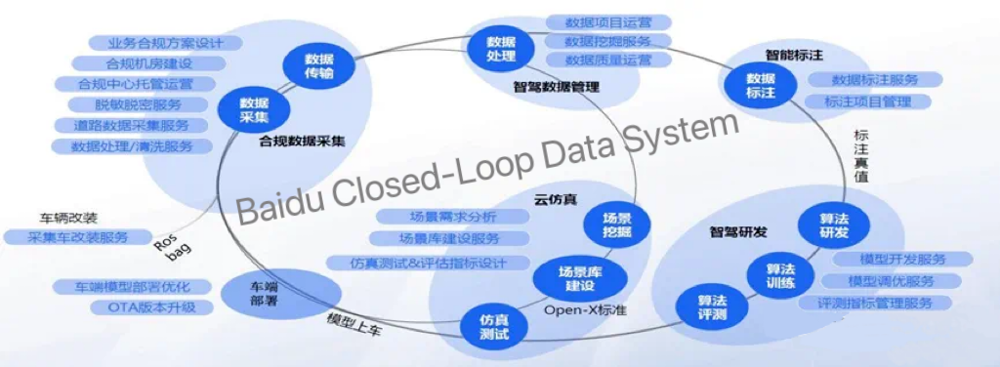
그림 21. Baidu가 공개한 "Closed-Loop Data System" 그림. 합규 데이터 수집(차량 개조·탈민감화) → 데이터 처리·관리 → 라벨링 → 알고리즘 개발·학습·평가 → 시나리오 라이브러리(OpenX 표준)·시뮬레이션 테스트 → 차량 배포·OTA. 출처: Baidu Apollo 공개 자료, Li et al. 2024 서베이 저장소에 수록(img_resource/3-2-4_Baidu_Close_Loop_Data_System.jpg, 저장소 Apache-2.0). 원 저작권은 Baidu에 있다. 원본 크기.
R6 "플라이휠 대형 모델": 고가치 클립 7,000만 개와 실주행 30억 km로 학습한 강화학습 기반 종단간 모델. R7(2026-04): 사전학습·시뮬레이션·강화학습 3층 구조, 누적 120억 km와 "골든 데이터" 1억 건
📰
고객
2026년 2월 기준 글로벌 OEM 24곳(BMW 중국·아우디·도요타·BYD·포드 등)
📰
자금
2026년 7월 홍콩 상장, 7억 5,000만 달러 조달
📰
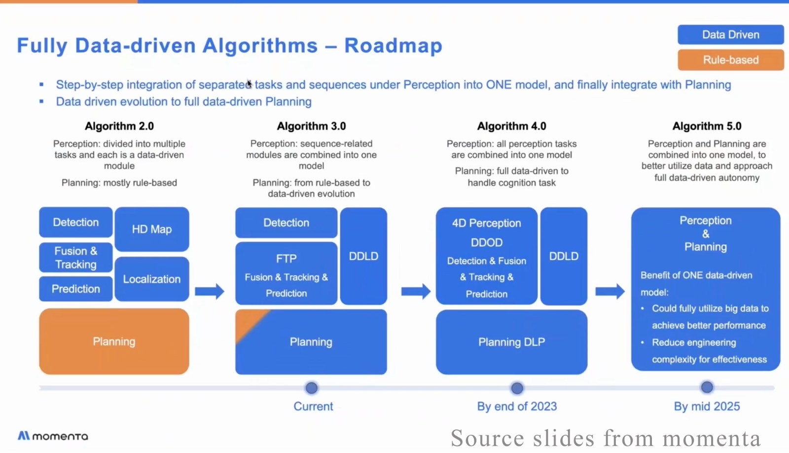
그림 22. Momenta가 발표한 "완전 데이터 기반 알고리즘 로드맵" 슬라이드. 규칙 기반(주황) 계획을 단계적으로 데이터 기반(파랑) 모듈로 바꾸고, 2025년 중반에 인지와 계획을 한 모델로 합치는 목표를 적었다. 4.7절의 "강화학습이 양산으로" 흐름의 출발점이다. 출처: Momenta 발표 슬라이드 화면, Li et al. 2024 서베이 저장소에 수록(img_resource/3-1_momenta_data_driven_planning.png, 저장소 Apache-2.0). 원 저작권은 Momenta에 있다. 크기만 줄임.
42dot이 개발한 종단간 시스템 Atria AI를 2026년 말까지 국내 차량에 실어 엣지 케이스 데이터 수집. 국토부와 협력해 전남·광주에 Atria AI 탑재 "SDV Pace Car" 투입
📰
이중 트랙
NVIDIA 검증 플랫폼 기반 L2+/L2++ 양산 2028년, 자체 Atria AI 기반 L2++ 양산 2029년 하반기 목표
📰
NVIDIA 협력
2026년 3월 GTC에서 DRIVE AGX Thor·Hyperion 기반 양산과 Motional을 통한 L4 발표
📰
현대모비스: 2026년 4월 실차 주행·주차 센서 데이터를 데이터 관리 솔루션과 시뮬레이터에 통합한 검증 체계 발표. 시뮬레이터 60대를 연결하면 "1만 시간 상당 검증을 1주일에" 끝내는 것이 목표이며, 야간·우천·돌발 상황 재현이 강점이라고 밝힘(계획치) 📰⚠️ (PR Newswire).
다른 OEM
OEM
내용
근거
Toyota·Woven
Arene: 동의 기반 주행 데이터 수집·분석(Arene Data)과 가상 검증(Arene Tools)을 2025년 RAV4부터 적용
📰
VW
Bosch와의 자율주행 얼라이언스에 약 15억 유로를 쓴 뒤 2026년 7월 조기 종료 확인
월드모델이 시뮬레이션의 중심이 됨. Waymo World Model(2026-02), Wayve GAIA-4(2026-08), XPeng X-World, Momenta R7, Huawei의 클라우드 월드모델, comma의 학습된 시뮬레이터. 2026년 한 해에 거의 모든 진영이 "생성 모델로 시험한다"를 선언함 📰.
강화학습·폐루프 학습이 양산에 들어옴. Momenta R6("강화학습 기반 종단간 양산 최초" 주장), Tesla v14.3 릴리스 노트의 강화학습 단계, NVIDIA AlpaGym, XPeng 온라인 강화학습 📰🔍.
라벨링이 자동으로 이동함. NVIDIA 인과 추론 자동 라벨링, TIER IV Co-MLOps 자동 라벨링(2026), Bosch의 신경망 자동 라벨링은 3D 박스 비용 최대 70% 절감을 주장 📰⚠️. Scale AI의 자율주행 라벨링 축소가 같은 흐름의 뒷면임.
데이터 주권이 아키텍처를 가름. Mercedes CLA(중국 Momenta / 미국 NVIDIA), BMW iX3(중국 Momenta / 글로벌 Qualcomm), Tesla 상하이 데이터센터. 어느 나라의 데이터로 어느 나라의 모델을 만드느냐가 공급 구조를 정함 📰.
툴체인은 열리고 데이터 공유는 실험 중임. NVIDIA Alpamayo·AlpaSim 오픈소스, Waymo WOD-E2E, TIER IV Co-MLOps, Catena-X 중–유럽 확장. 반면 Tesla·Baidu는 폐쇄를 유지함 📰.
GDPR + EDPB 커넥티드카 가이드라인(차량 데이터 대부분을 개인정보로 간주, 차내 처리 권고) 📰; Data Act 2025-09-12 적용, 2026-09-12부터 설계 의무(사용자가 데이터에 직접 접근) 📰 (Mayer Brown); AI Act 부속서 I(형식승인 대상 안전 부품의 AI) 의무는 2028-08-02로 12개월 연기 📰
수집 동의·익명화 비용, 제3자 데이터 개방 의무, 안전 부품 AI의 문서화
UNECE(64개 체약국)
R155(사이버보안 관리체계)·R156(소프트웨어 업데이트 관리체계) — 2024-07부터 신차 전체 📰; R157 DSSAD 기록 의무 📰
OTA가 "관리 프로세스"가 됨(RxSWIN·무결성·이력), 로깅이 의무가 됨
중국
2026-01-30 8개 부처 "자동차 데이터 국외 이전 보안 가이드라인(2026판)": 연구개발·자율주행·소프트웨어 업그레이드 시나리오별 중요 데이터 식별, 보안 평가·표준 계약·인증, 로그 3년 보관 📰 (China Briefing)
외국계 OEM은 중국 데이터로 중국 안에서만 학습(Tesla 상하이 데이터센터)
한국
2026-01 개인정보위: 규제 샌드박스로 안전 조치 시 자율주행차·로봇의 원본 영상(비식별 없이) 활용 허용, 9개사 신청; "자율주행 영상처리장치" 정의, 접근 기록·삭제 의무 신설 📰 (머니투데이)
얼굴을 가리면 인식 학습이 안 되는 문제를 샌드박스로 풀기 시작
미국
2025-04 AV 프레임워크, 2026-01 AV STEP 철회, 2026-03 FMVSS 개정안, 2026-07 Zoox 면제 📰
Tesla 대형 버전 연 1회 + 포인트 릴리스 주 단위; comma 약 2개월; Waymo 2026년 10개 이상 도시 확장(2024년 2개, 2025년 2개 대비) 📰⚠️
원가
자동 라벨링과 온보드 선별이 사람·저장·반출 비용을 줄임
Bosch 70% 절감 주장 📰⚠️. 주의: NVIDIA의 "98.6% 추론 비용 절감"은 사내 인사 챗봇의 단순 도구 호출을 70B → 1B로 증류한 사례이며 자율주행에 그대로 적용할 수 없음 🔍
시장 확장
새 지역 데이터를 빠르게 흡수해 현지화 비용을 줄임
Wayve 506개 도시·43% 현지 데이터 없이·HD 지도 불사용 📰⚠️; Momenta 24개 OEM·100만 대 📰; Mobileye Surround ADAS 1,900만 대 수주 📰
안전성 입증
플릿 데이터가 곧 안전 통계이고, 시뮬·회귀 세트가 안전 케이스의 증거가 됨
Waymo 안전 허브(2.2억 마일, 중상·사망 94% 감소)와 동료 심사 논문 📰; Baidu 에어백 1,440만 km당 1회 📰; Mercedes L3 95km/h는 TÜV Rheinland 시험과 트랙·공도 동적 시험으로 KBA 승인 📰; UL 4600 안전 케이스 📰
장기 검증 자산
한 번 만든 시나리오·회귀 세트는 다음 모델, 다음 차종에도 쓰임
Waymo Simulation City·Waymax 📰; ASAM OpenSCENARIO DSL 2.2·OpenLABEL·OpenODD로 이식성 확보 📰; TIER IV scenario_simulator_v2 🔍; Foretellix 시나리오 커버리지 📰
공통 조건: 다섯 경쟁력의 공통 조건은 한 바퀴를 얼마나 자주, 얼마나 싸게, 얼마나 믿을 수 있게 돌리느냐임. 5.1~5.4의 병목이 바로 그 세 변수를 막는 곳임.
월드모델 기반 검증이 표준이 됨. Wayve GAIA-4(AI Driver 인더루프, 반사실 재생), NVIDIA Cosmos Transfer·NuRec, Waymo World Model(라이다 동시 생성), Huawei 클라우드 월드모델, XPeng X-World 📰. 관건은 "월드모델이 만든 장면을 규제가 증거로 받아 주는가"이며, R157 부속서 4의 "도구 검증" 요건이 그 관문임.
학습된 시뮬레이터에서 직접 학습한 모델이 양산차에 실림. comma 0.11이 첫 공개 사례이고 🔍, NVIDIA AlpaGym·Momenta R7이 같은 방향임 📰.
플릿 간 데이터 공유가 실험 단계를 지남. TIER IV Co-MLOps(택시 회사·Astemo), Catena-X 중–유럽(2026-11), NVIDIA 1,700시간 오픈 데이터, Waymo WOD-E2E 📰. 데이터 주권 규제가 오히려 "국경 안에서의 공유"를 밀어 올림.
에이전트가 플라이휠을 돌림. TIER IV는 "사람은 요구사항, AI 에이전트가 라벨링·정제·학습·평가·개선"을 주장하고 📰⚠️, NVIDIA OSMO는 코딩 에이전트와 연동해 재구성·큐레이션을 자동화함 📰. 아직 주장 단계임.
파운데이션 모델이 라벨링을 줄임. VLM이 차종·치수를 추론해 3D 박스의 초깃값을 만들고, VLM을 "라벨 생성기"로 써서 가벼운 검출기를 학습시킴 📰.
로깅이 규제 증거가 됨. R157 DSSAD, EU EDR 의무(2024-07), 2022/1426의 L3 이상 데이터 저장 요구, 중국 로그 3년 보관, 한국 접근 기록 의무 📰. 개발용 트리거와 규제용 기록이 같은 이벤트(개입·전환 요구·최소위험기동)를 찍으므로, 둘을 한 파이프라인으로 설계하는 것이 자연스러움.